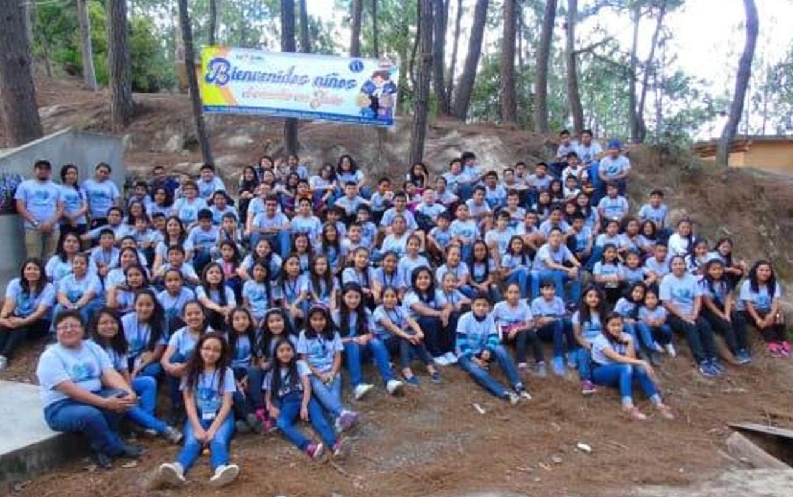

A los
cuatro meses
empecé a comer papilla, pero seguí tomando leche materna hasta los dos años que fue cuando nació mi hermano, tres años y medio después de mí, yo aún tomaba biberón, algo que dejé recién a los
cinco años
,ya que no quería entrar al colegio y usaba eso como excusa.
A los seis meses dije mi primera palabra: “Papá”. A los once meses empecé a caminar. Desde pequeño, me encantaba salir, ir a parques acuáticos y visitar ríos naturales. Nunca fui tímido con la gente que me alzaba o jugaba conmigo.
Fui bautizado en la Iglesia Católica casi al cumplir dos años. Ese mismo día se robaron la cámara con todas las fotos del evento, por lo que no existe ningún recuerdo visual de mi bautizo, algo que a mis papás todavía les molesta.
Niñez, Educación y Juventud.
Desde esa etapa comencé a mostrar gusto por la tecnología. Mi mamá cuenta que incluso cuando estaba embarazada de mí, jugaba en la consola Nintendo 64.
Al
cumplir los 3 años, en el año 2010, llego a mi vida mi hermano Brandon Steven Donis Romero. Su nacimiento fue algo muy especial, no solo para mis padres, sino también para mí, ya que durante mucho tiempo había estado solo en casa. Mi mamá cuenta que constantemente le pedía que me diera un hermanito, porque quería tener con quién jugar y no sentirme solo. Desde que Brandon nació, nuestras vidas se llenaron de risas, juegos y también, como suele pasar entre hermanos, algunas peleas. Sin embargo, a pesar de las diferencias, crecimos compartiendo momentos únicos, especialmente jugando videojuegos, algo que con el tiempo se volvió una de nuestras actividades favoritas. Nuestra infancia juntos estuvo marcada por la compañía, la complicidad y ese lazo inquebrantable que solo los hermanos conocen
A los tres años empecé a asistir a un jardín de niños cerca del trabajo de mi mamá. El motivo principal fue que, al ser hijo único en ese momento, no tenía referencia de cómo usar el baño. En el jardín me enseñaron y perdí el miedo. En casa, mis papás inventaron una canción especial que me cantaban mientras me acompañaban hasta que aprendí a ir solo.
En 2012 , con cinco años, ingresé a la Escuela Oficial de Párvulos en Tierra Nueva. El primer día lloré al soltar la mano de mi mamá, pero con el tiempo, ese lugar se volvió especial para mí. Nos disfrazábamos, hacíamos actos, celebrábamos con profesores de física y teníamos despedidas muy bonitas.
Luego pasé por varios colegios. 2014 En primer grado estuve en el Liceo Adrián Bastiense, pero no fue una etapa muy significativa.
En segundo grado, 2015 me trasladaron al Colegio La Salle, donde estuve cinco años y viví algunas de las mejores experiencias de mi vida.
Hicimos campamentos en Huehuetenango, fiestas de disfraces, exposiciones para los profesores y celebraciones de fiestas patrias. Una vez, fuimos al Obelisco por las antorchas y las llevamos a las oficinas de "Qué Chilero", estuvimos empapados por la lluvia. Fue tan loco que aún me sorprende que no nos hayan sacado de ahí.
En 2019 , culminé mi educación primaria con la graduación de sexto grado en el Colegio La Salle, un lugar que marcó profundamente mi infancia. Gracias a esos años, pude desarrollar muchas habilidades sociales y creativas, como la elaboración de un libro especial, donde escribíamos nuestras propias historias y las exponíamos en ferias escolares. También logré conocer y conectar mejor con las personas, reír, bromear con mis amigos, hacer una que otra travesura, y experimentar el principio del amor, algo que al llegar a la adolescencia no se puede simplemente ignorar. Aún recuerdo muy bien mis años en ese colegio, y si pudiera, los volvería a vivir sin dudarlo.
Regresaré un año en el tiempo y les contare que en el año 2018 nació mi hermana Fátima Naomi Donis Romero, una personita sumamente especial en mi vida. Aún recuerdo claramente el momento en que recibimos la noticia; mi hermano y yo comenzamos a bailar de la emoción. Siempre habíamos soñado con tener una hermanita, y por fin ese deseo se hacía realidad. Llegó a la familia como la única niña, y desde entonces la he cuidado y querido con todo mi corazón.
2020 ingresé al Liceo Abba Padre. Ese año comenzó la pandemia del COVID-19. Al principio pensamos que sería algo temporal, pero pronto se volvió una situación mundial. Las clases virtuales se volvieron nuestra nueva realidad. Para mí, fue una etapa muy difícil. No tenía buena conexión a internet y se dificultaba para mi ingresar a las clases en línea, los profesores podian; solo enviar documentos, muchas veces sin explicación clara. Me tocó aprender por mi cuenta. Me sentía solo, abrumado y sin apoyo, lo que me afectó académica y emocionalmente.
No tengo muchas buenas fotos de esos años, así que dejaré las que logre encontrar, ya que al estar encerrados, tomar fotos no era algo importante en ese momento
En 2022 , justo antes de comenzar tercero básico, logré mejorar mis notas y asistir con más regularidad a las clases virtuales. La situación de la pandemia comenzaba a mejorar y me sentía más estable.
Cuando empezó el cuarto bimestre volvimos a clases presenciales. Fue como volver a ser ese niño de párvulos: estaba nervioso, incluso pensé en seguir desde casa. Pero fue una decisión acertada. Ver a mis compañeros y profesores en persona, trabajar en grupo, resolver dudas cara a cara, fue una experiencia que había extrañado. Me gradué ese año, orgulloso de haberlo logrado a pesar de todo.
En 2023 inicié la carrera de Bachillerato en Computación en el INED, un instituto público. Aunque al principio no me convencía mucho, era la única opción que ofrecía la carrera cerca de casa. Al final, fue una etapa distinta pero enriquecedora. Hice nuevos amigos que ahora son muy importantes para mí, aprendí cosas nuevas y viví momentos únicos. Hubo altibajos, pero logré cerrar el año con éxito.
En 2024 , mi segundo y último año, participamos en una feria científica, donde presentamos un experimento con fuego que se realizaba con elementos químicos. Aunque algunos compañeros se enfermaron por la toxicidad de los gases, todo terminó bien.
En esta etapa de mi vida, he tenido la oportunidad de compartir una relación de pareja que ha significado más que solo momentos de compañía. La conocí gracias a una amiga en común, y desde entonces, hemos compartido muchas experiencias que han influido de forma positiva en mi vida. Durante estos 11 meses que he compartido con Jimena Sánchez, he experimentado un proceso importante de crecimiento personal. Más allá de lo sentimental, estar con ella me ha ayudado a desarrollar habilidades emocionales y personales que también son parte de mi formación integral. Estudiamos en la misma universidad, lo que ha sido una ventaja para crecer juntos académicamente, apoyarnos en tareas, proyectos y metas en común. Compartimos actividades que me han ayudado a ver el valor del tiempo y de la conexión humana: cocinar juntos, salir a conocer nuevos lugares, o simplemente acompañarnos en espacios cotidianos. Además, he aprendido a comunicarme mejor, a tener paciencia, y a entender que el crecimiento personal muchas veces también se da a través de las relaciones significativas que construimos. Gracias a esta etapa, he reforzado valores importantes como la responsabilidad emocional, el compromiso y el respeto, y me ha enseñado que, incluso en el ámbito educativo, el apoyo mutuo y las relaciones sanas pueden ser fundamentales para continuar avanzando como persona.
Ese mismo año, participé en un curso de gastronomía donde aprendimos a preparar muchísimas recetas. Una de mis favoritas fue la chimichanga de manzana, no solo por su sabor, sino porque fue de las más divertidas de hacer. Sinceramente, este curso ,y la gastronomía en general, es algo que me llama mucho la atención. Me gusta pensar que crear comida con tus propias manos, para que otra persona pueda disfrutar de su sabor, es una de las formas más bonitas de compartir algo con los demás. Y gracias a esto, decidi hacer burritos gigantes en compañia de mi novia, salieron increibles y deliciosos, como eran tan grande, no pudimos comerlos solo nosotros e invitamos a mi familia.
Asi mismo, enfrentamos el reto del seminario. Realizamos encuestas durante todo el año, nos tenían preparado un proyecto en el que debíamos presentar un informe a los padres de familia de un ciclo anterior, pero, en lugar de presentar frente a padres de familia, solo entregamos el informe a los profesores ya que, debido a las complicaciones del tiempo y que tantos estudiantes debian realizar esta actividad, no pudimos realizar lo que teniamos previsto.
Luego llegó el tiempo de realizar mis prácticas supervisadas. En esta etapa, mi mamá fue de gran ayuda, ya que logró que me aceptaran, junto a uno de mis grandes amigos, en su lugar de trabajo: la Dirección General de Caminos. Durante mis prácticas, mi principal labor consistió en inventariar todas las computadoras del lugar. Además, tuve la oportunidad de aprender a instalar varios programas y realizar otras tareas relacionadas con el área de tecnología. Fue una experiencia enriquecedora y bastante divertida; me sentía cómodo y bienvenido cada vez que llegaba a trabajar, lo que hizo de esa etapa un recuerdo muy especial en mi formación.
Luego de eso, el 1 de diciembre obtuve mi título y me gradué. Fue un día increíble, desde la ceremonia de graduación, que se realizó en un hotel de la zona 14, hasta la pequeña “fiesta” que compartimos después. Nos reunimos con mis familiares y seres queridos en Castor Pizza, donde compartimos risas, comida y muchos buenos recuerdos. Me siento muy orgulloso de haber culminado este ciclo, ya que representa el cierre de toda mi educación hasta el momento: desde aprender a escribir en primero primaria hasta adquirir conocimientos técnicos como el mantenimiento de computadoras. Es un logro que guardaré con mucho cariño.
Ahora, con mi título en mano, mi meta es seguir estudiando, esta vez una ingeniería. Espero que en unos años, pueda ver otra foto como la de mi graduación, pero esta vez con mi título universitario. Porque esta historia apenas comienza.
Metas
- Finalizar y dominar el idioma inglés mediante mi curso actual.
- Conseguir un empleo gracias a los conocimientos adquiridos en inglés.
- Adquirir mi propio vehículo con el fruto de mi trabajo.
- Graduarme de la universidad y obtener mi título profesional.
- Lograr independizarme y adquirir mi propia vivienda.
Pasatiempos
- Jugar videojuegos en mis tiempos libres.
- Escuchar música, especialmente cuando quiero relajarme o concentrarme.
- Pintar y dibujar, actividades que me permiten expresar mi creatividad.
- Jugar póker con mis amigos, una tradición que siempre trae buenos momentos.
- Salir a conocer nuevos lugares y disfrutar de experiencias diferentes.
- Me encantan los sitios donde pueda nadar, ya que disfruto mucho estar en el agua.
Deportes que practico
- Futbol
- Basquet
- Billar
¿Qué me gusta?
- Me gusta cocinar y experimentar con nuevas recetas.
- Disfruto caminar, especialmente en lugares tranquilos o rodeados de naturaleza.
- Me gusta mucho la comida tradicional guatemalteca ymexicana
- Me gusta bailar merengue
- Me gusta mucho aprender como funcionan las cosas tecnologicas y aprender a repararlas
- Me gusta el mundo de las motocicletas
Lo que no me gusta
- No me gusta ninguna clase de mariscos
- No me gusta el calor
- No me gusta la multitud
A quienes admiro
- Admiro a Leonel Messi, ya que aun con dificultades fisicas logro ser lo que es hor en día
- Admiro al papa Francisco, más allá del ámbito religioso, por su decisión de rechazar las comodidades y lujos que conlleva su posición, manteniéndose humilde y sencillo a pesar del poder que representa.
- Admiro profundamente a mi padre, porque ha sido para mí el mayor ejemplo de trabajo duro, esfuerzo constante y amor incondicional hacia su familia
- Admiro profundamente a mi madre, porque con paciencia, ternura y amor me ha enseñado a ser una persona amable, respetuosa y considerada con quienes me rodean.
- Duolingo Sitio web para aprender ingles de forma gratuita. Duolingo
- Futbol Libre Sitio web para ver partidos de futbol en linea. Futbol Libre
- Quick Draw Sitio web donde puedes jugar con una IA, haciendo dibujos mientras ella intenta adivinarlos Dibuja rapido!!
Tres sitios web que recomiendo
Agradezco sinceramente que hayas dedicado tiempo a leer este documento. Fue elaborado por Jostin Roberto Donis Romero, estudiante de primer semestre de la Facultad de Ingeniería en Sistemas de la Universidad Mariano Gálvez de Guatemala.